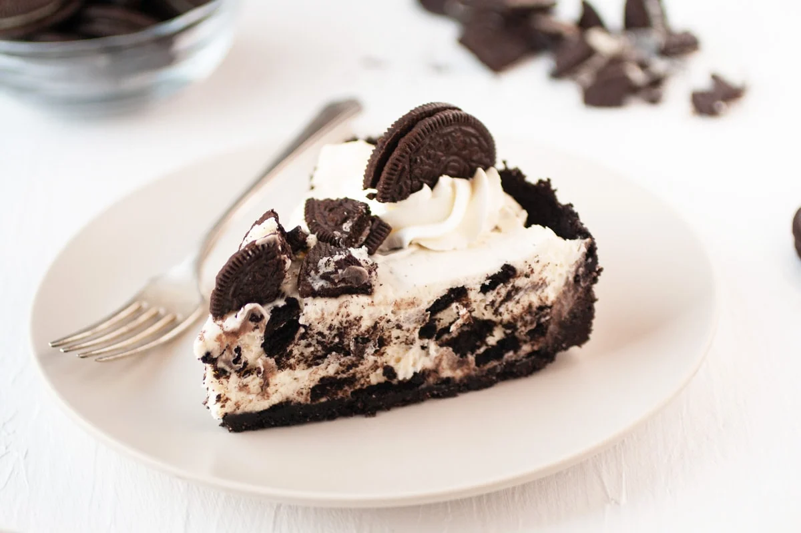

Oreo cheescake

creamy, soft cheescake, infused with your favourite round cookie treat
I know, I know,after that meal you just had, i just know your craving that deserved dessert to satisfy that sweet tooth of yours, while sitting on your couch, watching your favourite series on Netflix, why not have a cheescake conveniently ready in your fridge to devour.
WELL, YOU'VE GOT TO HAVE MADE IT FIRST, so lets do just that now
What you will need to have at hand
- cream cheese
- sour cream
- vanilla
- a pack of oreos
- white chocolate
- cream.
How to make this mouth watering dessert
- Make the crust
use a food processor to blend some oreos to crumbs. Add melted butter and give it a good stir to combine. Press this into the base of a lined springform pan in an even layer. Use a glass to help pack it down well.
- Beat the cream
In a large mixing bowl, use an electric mixer to beat the cream until it reaches stiff peaks. The peaks should just hold when done but take care not to overbeat or it will become grainy. Set it aside.
- Make the cream cheese mixture
Now beat together the softened cream cheese, sour cream, vanilla and melted white chocolate in a separate bowl. Add the whipped cream ⅓ at a time taking care to just fold it through gently.don’t stir too vigorously,Just fold the mixture. Now fold in some chopped up oreos.
- Assemble
Tip the filling into the baking tin on top of the oreo crust and level it out so it’s smooth. Cover the top with plastic wrap and let it chill for a minimum of 4 hours, upto a day so that it sets nice and firm overnight in the fridge.